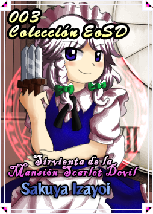

Personaje: Sakuya Izayoi
Características del Personaje
Perfil
Hay una mansión color escarlata en las orillas de un lago de Gensokyo.
Ella es una sirvienta destacada que trabaja ahí.
Aparte, controla el espacio-tiempo para mantener todo limpio y demás tareas que realiza ahí.
Ella no suele salir de la mansión a no ser que tenga que cazar humanos para su ama Remilia Scarlet.
--Opinión de IkuTronHD
Negativo
Lo malo es que su pasado es muy misterioso ya que unos de los mangas de Akyuu teoriza que fue cazadora de vampiros, Remilia le perdonó la vida y ahora es su sirvienta por eso o es un Lunarian por lo que ocurrió en Touhou 8: Imperishable Night pero se ve que no es un Lunarian.--Opinión de IkuTronHD
Positivo
Me gusta mucho este personajes tienen muchas referencias a la saga de "JoJo's Bizarre Adventure" sobre todo al personaje de Dio Brando, que se caracteriza por parar el tiempo, aparte que sus movimientos con sus cuchillos son interesantes como lanzarlo al aire y rebotan hacía abajo y demás cosas interesantes, que puedes verlo en esta página.--Opinión de IkuTronHD
Diferencias de Hisoutensoku y Immaterial and Missing Power
- El sistema de cartas es distinto, aparte que hay algunas cartas de Soku/UNL y IaMP pero la mayoria son originales, aparte que otras son muy rotas.
- Los movimientos normales no son iguales/idénticos ni a Soku ni a IaMP en tanto a frame data o velocidad